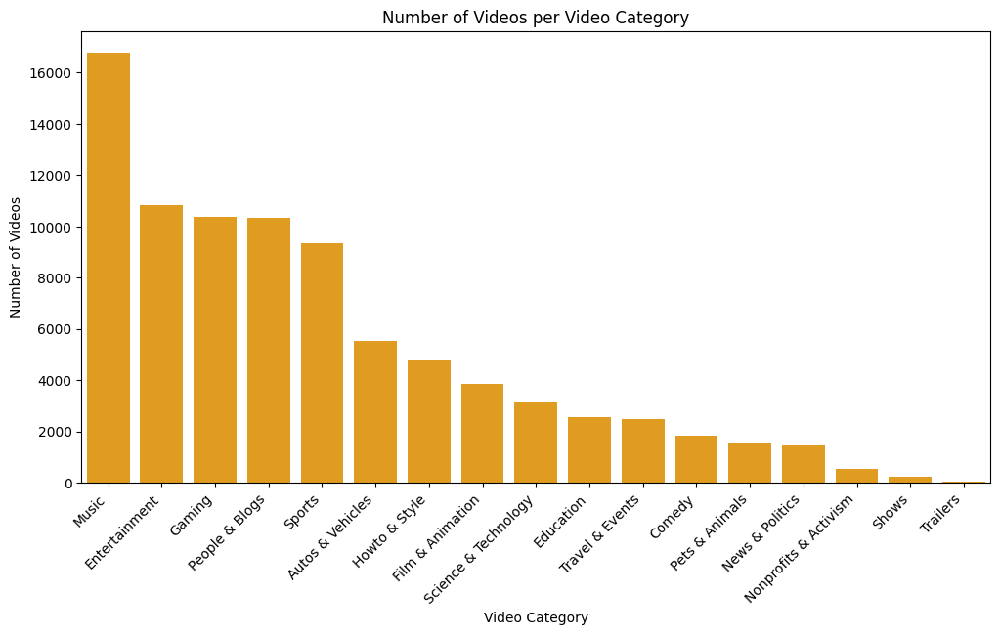
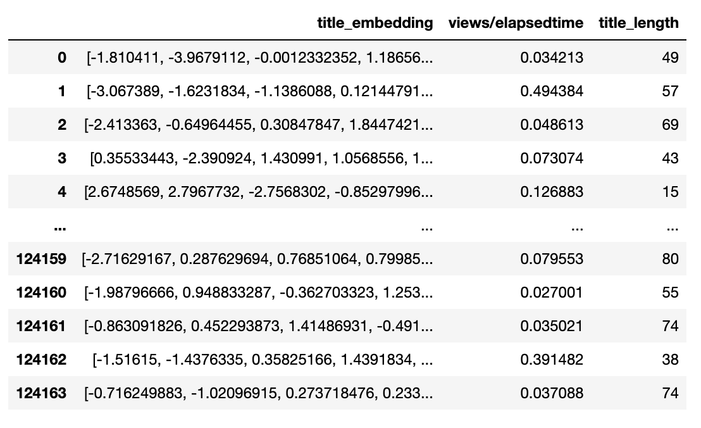
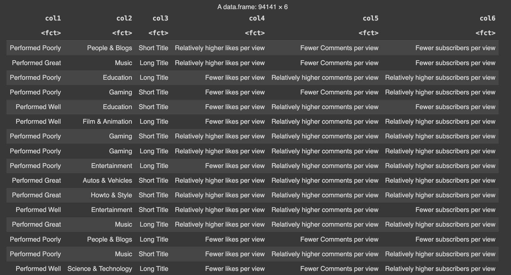
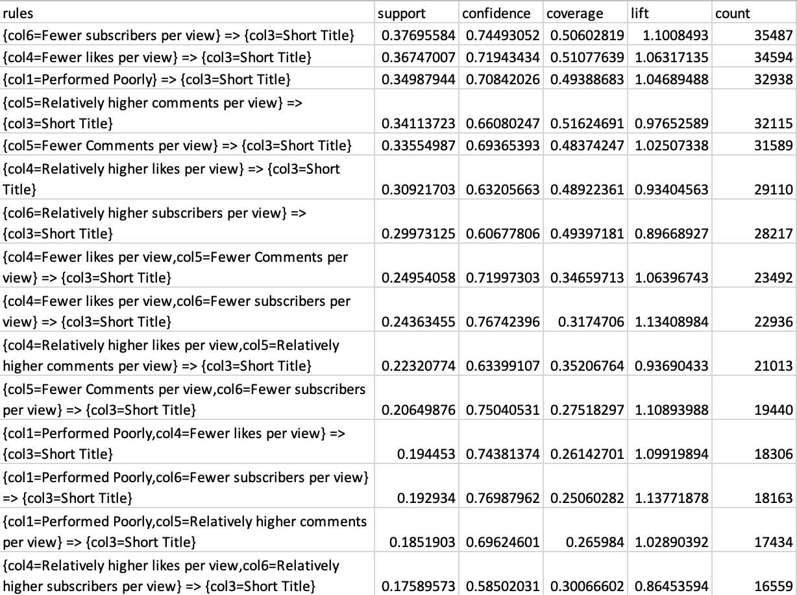
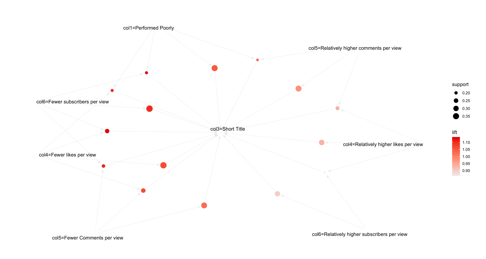

YouTube has been the leader among content creation platforms for decades, witnessing a surge in the variety of uploaded content. YouTube demands creators to showcase their talent and optimize their content to increase the number of views, ultimately maximizing its reach. This research aims to determine the most crucial factors in boosting the number of views, with a primary focus on elements presented to users - specifically, thumbnails and titles (refer Fig. 1). While video content, watch time, likes, shares, and subscribers play significant roles in YouTube's video recommendation system, this study examines whether titles and thumbnails have a noteworthy impact on converting a video recommendation into an actual view.
The author's previous research establishes that titles indeed play a role in influencing views. The study observed that shorter titles gained more traction compared to longer ones. The current study aims to build upon this research by extending the idea of titles' influence on views and incorporating the characteristics of thumbnails. In the journey also explore the other performance metrics such as likes, subscribers and number of comments on a video and its relation to title and views.
 Fig. 1 Youtube video format
Fig. 1 Youtube video format
 Fig. 2 Youtube Analytics
Fig. 2 Youtube Analytics
YouTube Analytics Application is a platform (Fig. 2) created by Google for YouTube content creators to analyze their data. It displays basic analytics such as the number of views, shares, likes, dislikes, subscribers, and click-through rate. Additionally, it provides content creators with the freedom to visualize their data to gain more insights into the relationship between variables. The platform offers in-depth analysis of video performance, aiding content creators in improving video quality and content. Despite these features, there is currently no tool or analytics within the platform specifically designed to help creators craft effective titles and thumbnails – a critical aspect of content creation.
The focus of this research is to develop a tool that assists content creators in evaluating the quality of their titles and thumbnails. Additionally, the research aims to understand the impact that titles and thumbnails can have on users' mindsets, influencing their decision to either click or ignore the video. The fundamental question regarding the influence of titles and thumbnails on views leads to several intriguing research inquiries, outlined below. The project aims to shed light on the types of sentences and images that attract human attention, thereby affecting the click-through rate. This understanding could prove valuable across various domains, such as advertising, enabling brands to comprehend the impact of the text and images they employ in their advertisements and enhance them based on the findings of this research.
Through this approach, the model seeks to gain insights into the human mindset, specifically addressing the question: 'What prompts a user to click on a YouTube video once recommended?' Breaking it down into 10 research questions,
The research questions stated above should give a deeper understanding of the underlying reasons behind viewer engagement and the intricate dynamics influencing the success of YouTube videos. The data collected to analyse and answer the above questions are collected from various sources. The following section will examine the data collection process,
The major chuck of data that has been utilized in this project has been taken from Kaggle, uploaded by VISHWANATH SESHAGIRI [source]. (Click on the image below to view it in a seperate tab)
Youtube API was utilized in collecting youtube title information given the video ID. Title is one of the most essential components of the data. (Click on the image below to view it in a seperate tab)

Youtube API was utilized in collecting video thumbnail URLs given the video ID. Thumbnail is another really essential components of the data [Source code]. (Click on the image below to view it in a seperate tab)
API is used to download the images from the thumbnail URLS, the downloaded thumbnails are stored into a google drive link [Final uncleaned data]. The total time taken to collect 100k titles and thumbnails was 7 days. The API data collection will continue to fetch at least 300k data points. (Click on the image below to view it in a seperate tab)
This section will take you on a journey in understanding the underlying data and cleaning it for analysis and modeling
To initiate a comprehensive understanding of the data, a word cloud (refer to Fig. 3) has been generated to provide an overview of the columns present in the dataset. It should be noted that the word cloud was created to emphasize words with higher repetition. It is evident that several 'Unnamed' columns may have been generated while storing data using an API key; these should be removed. Additionally, the 'index' column serves no purpose and can be excluded. Other columns should be retained for further analysis. Moving on to analyzing the amount of missing values in the most important columns of the data.
 Fig. 3 Column names word cloud
Fig. 3 Column names word cloud
Fig. 4 Proportion of missing values in titles column
After some cleaning, it is observed that none of the columns have missing values. To proceed with data preparation, a deeper examination of the columns is required. The following section will focus on the most important columns and aim to clean them, completing the data cleaning process.
The video view count (Refer Fig. 6) seems to follow a exponential distribution, to understand the distributions better, the histogram for the views under 8k views is plotted. It should be noted that there is a data point that falls below 0, which is not plausible as views cannot go below 0. This issue will be resolved by removing the single row containing this anomaly.
The histogram for views under 8k (refer Fig. 7) reveals that the majority of records fall within the bracket of 0 to 4000 views. To build a classification multimodal, achieving a more balanced distribution of data across various view brackets is essential. This aspect will be addressed in the upcoming sections of the research, where additional data will be collected to ensure a more even distribution.

Fig. 7 Histogram for video view count (zoomed in)
The box plot (Refer Fig. 8), although not providing detailed information about quantiles, primarily focuses on identifying outliers. It is observed that the dataset contains numerous outliers, with some particularly significant ones having a view count exceeding 50M. Notably, there are very few videos with more than 50M views. The potential impact of these outliers on the analysis will be assessed after collecting more data to determine if this pattern persists.
One of the more intriguing columns to observe is 'views/elapsedtime.' This column interprets views not merely as raw data but as a variable that changes over time. It aids in understanding whether a video gained views steadily over the long run or experienced immediate effects, and vice versa.
Fig. 10 Distribution of the views/elapsed time (zoomed in)
It is interesting to note that there are numerous videos with views exceeding the time elapsed by a factor of 100 to 5000 (Fig. 10). This is a notable observation, suggesting that these videos gained traction very quickly, possibly due to a higher number of subscribers on the channel. The audience's immediate interest in upcoming videos could explain the rapid viewership. However, as our focus is on assessing the impact of titles and views on overall viewership, such cases may not accurately represent the relationship. Consequently, these rows will be removed from the dataset.
The data interestingly spans across the majority of YouTube categories (Fig. 11 and Fig. 12), exhibiting an almost equal distribution among key genres such as entertainment, people and blogs, gaming, and sports. It should also be noted that most of the genres have more than 2000 vidoes in the data containing 100k data points. This diversity is beneficial, as modeling the data can provide insights into the impact of titles and thumbnails not only within a single category but across a wide spectrum of categories.
At this point, the data is more or less clean, exhibiting no missing values and featuring appropriate data types with consistent values. While the dataset contains some outliers, they are retained at this stage as they might prove useful for the subsequent analysis. A partial snapshot of the cleaned dataset is displayed below (refer Fig. 13x). The image illustrates an additional column that has been introduced (VideoCategory), along with cleaned titles and thumbnail URL columns.
The two plots (Fig. 4 and Fig. 5) depict the number of missing values for the columns 'titles' and 'Thumbnail_URL'. It is observed that after the API data collection for 100k data points, almost 14% of the data had missing values. Removing rows with missing values is essential, as rows lacking the most important features for the research are practically not useful. The number of videos could be increased by collecting more data using the API, a step that will be taken in the further sections of the research work.
Fig. 5 Proportion of missing values in thumbnail URL column

Fig. 6 Histogram for video view count

Fig. 8 Box plot of video view count

Fig. 9 Distribution of the views/elapsed time
From Fig. 9, it must be noted that most of the values lie in the range of 0 to 1, which means that most of the videos present in the data has views less than the time elapsed after posting the video. Which is obvious as majority of the videos lied in the view brackets of 0 to 4k and mostly channel elapsed time woud be greater than the number of views the video gained. But the intesting points are the ones from 100.

Fig. 11 Videos per video categoryID
Fig. 12 Videos per video category
From prior research, the relationship between title length and views suggests that title length does play a role in influencing the number of views a video gains. Though the relation is not directly causal, it could be said that title length does influence views. To confirm this hypothesis, k-means clustering is performed on the data. K-means clustering is a form of unsupervised learning which helps in deriving the clusters of data that are related to one another by using a distance metric. The distance metric used for this method is the Euclidean distance. Euclidean distance takes into consideration the shortest distance between data points and thus helps in finding the closest points. The formula is provided in Fig. 14. K-means clustering is a form of partition clustering which is an algorithm that divides the dataset into sub categories based on certain criteria such as the shortest distance between the clusters and the centroid.
To advance the analysis, titles undergo embedding using a VGG16 network (see Fig. 15) to extract key features from the text. The VGG16 network, commonly utilized for image recognition, is repurposed for text analysis. The title embeddings are then subjected to hierarchical clustering to identify the closest titles. Notably, the 'views' variable is not utilized in this method. Hierarchical clustering offers advantages over k-means clustering, as it does not require a fixed number of clusters to be specified, allowing for the natural structure of the data to emerge. The approach employs divisive clustering, where each data point initially forms a single cluster and subsequently divides into smaller clusters. The distance metric utilized for this method is cosine similarity, chosen for its effectiveness in measuring the similarity between embedding vectors (see formula in Fig 16).
 Fig. 14 Euclidean Distance Formula
Fig. 14 Euclidean Distance Formula
 Fig. 15 VGG16 Architecture
Fig. 15 VGG16 Architecture
 Fig. 16 Cosine Similarity formula
Fig. 16 Cosine Similarity formula
To determine the influence of title length on views, the 'title_length' feature is derived by counting the number of characters in the title, while the 'views/elapsed time' ratio is considered instead of views to focus on the impact of titles relative to the time since publication. The 'views/elapsedtime' column is analyzed for outliers and subsequently removed to ensure accurate clustering. Thus, for k-means clustering, a subset of the dataset containing the 'title_length' and 'views/elapsedtime' features is used (refer Fig.17). Title embeddings are obtained by first passing the titles through a pre-trained VGG16 network with its fully connected layer removed to extract key features. The resulting features are then stored in the 'title_embedding' column. These title embeddings, along with the 'views/elapsedtime' features, are used for hierarchical clustering. Although 'views/elapsedtime' is not directly used in the clustering algorithm, it is utilized post-clustering as labels to analyze the pattern that emerges from the data. The link to the sample data can be found here.
 Fig. 17 Clustering Data
 Fig. 21 K-means clustering perfomed for 2 clusters
Fig. 21 K-means clustering perfomed for 2 clusters
Three clusters were obtained while clustering the title embeddings. The first cluster primarily included titles resulting in low 'views/elapsedtime' ratios. The second cluster comprised titles with predominantly high 'views/elapsedtime' ratios. The third cluster yielded mixed results, with a combination of low and high 'views/elapsedtime' ratios.
Comparing Hierarchical and K-means clustering, it can be observed that there exist two clusters (though hierarchical provided three clusters the third one can be ignored as it does not capture the video performance based on views) and the video titles fall into each of these clusters based on its characteristics.
 Fig. 19 Elbow method to find optimal K value
Fig. 19 Elbow method to find optimal K value
 Fig. 20 Silhoutte method to find optimal K-value
Fig. 20 Silhoutte method to find optimal K-value
 Fig. 22 Dendogram with hclust performed on title embeddings
Fig. 22 Dendogram with hclust performed on title embeddings
Based on the results, it is observed that titles with more than 50 characters had a mean 'views/elapsedtime' of 0.5 and a mean title length of 62 characters. In contrast, titles with fewer than 50 characters displayed a mean 'views/elapsedtime' of 0.4 and a mean title length of 30 characters. This suggests that videos with shorter titles performed relatively poorly compared to videos with longer titles. It is worth noting that the boundary lies at 50 characters, and given that the maximum length of a YouTube title is 100 characters, the clusters clearly differentiate shorter titles from longer titles.
The hierarchical clustering revealed three clusters based on title embeddings, each exhibiting varying views-to-elapsed-time ratios. The first cluster displayed a lower mean views-to-elapsed-time ratio, while the second cluster exhibited a higher mean ratio. The third cluster presented a mixture of views-to-elapsed-time ratios. This suggests that titles within the second cluster corresponded to videos with better performance compared to those in the other two clusters.
In conclusion, the results of the cluster experiment indicate that titles indeed have an impact on YouTube video performance.
The conclusions drawn from clustering experiments on video titles and their impact on views suggest that titles indeed play a significant role in video performance. To deepen the analysis, association rule mining (ARM) is employed to study the relationship between title characteristics and various metrics of YouTube video performance. ARM is a method of discovering rules within data to unveil underlying relationships. These rules typically follow an 'if-then' structure, with variables on the left-hand side (LHS) as antecedents and those on the right-hand side (RHS) as consequent (refer Fig. 23)
In ARM analysis, key metrics such as support, confidence, and lift are extremely important. Support indicates the proportion of the dataset containing both the LHS and RHS of a rule, while confidence represents the conditional probability of the consequent given the antecedent. Lift measures the degree of association between the antecedent and consequent, with values greater than 1 indicating a stronger relationship than would be expected by chance.
The Apriori algorithm is used for association rule learning. It is specifically designed to discover frequent item sets in transactional databases and to generate association rules based on these frequent item sets.
This study employs apriori algorithm to investigate the relationship between title length and various metrics of video performance, including views, subscribers gained, comments received, and likes garnered. By analyzing these associations, the research aims to uncover insights into how title characteristics influence video performance outcomes.
 Relationship between antecedent and consequent (Fig. 23)
Relationship between antecedent and consequent (Fig. 23)
 Apriori Algorithm (Fig. 24)
Apriori Algorithm (Fig. 24)
To prepare the data for analysis using the Apriori algorithm, it first needs to be converted into transaction data. The original data, which is in the form of Record data (refer Fig. 25), undergoes a transformation process to create transactional records suitable for association rule mining.
The transformation begins by binning the columns into categories based on an analysis of the data distribution. Each column is processed individually, with the goal of maximizing variability while maintaining equal distribution within each category. For instance, the 'title length' column is divided into 'short title' and 'long title', while the 'views/elapsed time' ratio is categorized as 'performed poorly', 'performed well', and 'performed great'.Other columns are binned as 'relatively more' or 'relatively less' compared to the median of the data. This binning process ensures that each transaction captures relevant information while reducing complexity (refer Fig. 26 for final sample dataset)
In total, approximately 125,000 transactions are generated from the original data. A sample of the final transaction data is provided here.
Fig.25 Sample of Original Data
Fig.26 ARM data
The apriori algorithm was run on the dataset to obtain top 15 rules with a fixed RHS of ‘shorter titles’ for support, confidence and lift with a minimum support of 10% and a minimum confidence of 50%. ‘Short titles’ were picked to be fixed as the RHS as it helps in exploring all the patterns that exist around short titles and its impact on the performance of the videos. The rules obtained are as follows:

Fig.27 Support Data
Fig.28 Support rules Visualization
The top rules based on the support metric indicate that videos with shorter titles tend to perform poorly in terms of the number of subscribers, likes, and views they accumulate over time. This observation, with a support of 35%, is significant within the dataset, suggesting a substantial association between shorter titles and lower performance metrics.

Fig.29 Confidence Data

Fig.30 Confidence rules Visualization
The top 15 rules obtained from confidence suggest that similar findings of support, the confidence of the rules signifies that with an average confidence of 75% it could be said that if the video performs poorly, on an average, 75% of the times it consists of a shorter title.

Fig.31 Lift Data

Fig.32 Lift rules Visualization
The higher lift value for the rules also suggests a very strong relationship between the antecedent and the consequent, beyond what could be expected by chance.
From the rules derived through the Apriori algorithm, a strong association emerges between poor video performance and short titles . Notably, an average support score of 30%, confidence level of 70%, and lift value exceeding 1 were observed for rules where poor performance metrics served as the antecedent and shorter titles as the consequent.
The high support, confidence, and lift values confirm that titles indeed impact video views. While the precise magnitude of this impact remains unquantified, the evident relationship between titles and video performance, as revealed by both association rule mining and clustering analyses, cannot be overlooked.
Rohit.Raju@colorado.edu
1600 Amphitheatre Parkway
Mountain View, CA
94043 US